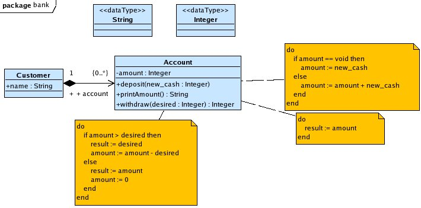
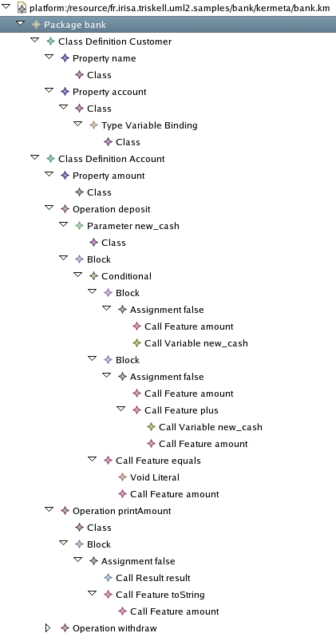

The software industry faces many challenges.
One of them is the difficult understanding of its customers precise needs. A way to solve or reduce uncertainty and waste of time and money is to present those customers a preliminary version of the planned system as early as possible in the development process.
For software engineers, the access to their analysis model under a operative form in order to permit the users to manipulate a simplistic implementation of the main features.
As an illustration of such a prototyping use of Uml2 MDK tools suite, we present a (very restricted) sample of an accounting model and its use in an even simpler prototype.

An analysis model can be used “as it is” which means the prototype could link to the all primitives the model defines (classes, operations, attributes). Or you can add some behavior to this model by giving a operative body to class operations: the code must be written in Kermeta language syntax and embedded in UML comment attached to the corresponding operation.
Our example presents such a behaviored model.
Applying the uml2km tool on our UML model (bank.uml2), we get a Kermeta executable model in a XMI form: bank.km. You can have a look in it through the Ecore “reflexive editor”, as shown above.

This Kermeta bank.km model can be transformed in a human readable text version: (bank.kmt):
/*
* fr.irisa.triskell.uml2.samples/src/kermeta/bank.kmt
*
* a human readable version of the file generated by "uml2km"
* for documentation of the "bank" example.
*/
package bank;
require kermeta
class Customer
{
reference name : kermeta::standard::String
reference account : kermeta::standard::OrderedSet<Account>[0..*]
}
class Account
{
reference amount : kermeta::standard::Integer
operation deposit(new_cash : kermeta::standard::Integer) is do
if amount == void then
amount := new_cash
else
amount := amount + new_cash
end
end
operation printAmount() : kermeta::standard::String is do
result := amount.toString
end
operation withdraw(desired : kermeta::standard::Integer) : kermeta::standard::Integer is do
if amount > desired then
result := desired
amount := amount - desired
else
result := amount
amount := 0
end
end
}After getting the Kermeta version of your UML model, you can link any Kermeta program to it, giving you access to all the features and types defined in it.
As an example, we write a drastically simple bank back-office application which manipulates the elements of our Bank model: prototype.kmt.
@mainClass "bank::Main"
@mainOperation "main"
package bank;
require kermeta
require "bank.km" // link to the executable model
require "utilities.kmt"
class Main
{
reference customers : kermeta::standard::OrderedSet<bank::Customer>
operation main() : Void is do
// create our "Bank" :-)
customers := kermeta::standard::OrderedSet<bank::Customer>.new
// launche the interface
var ui : UserInterface init UserInterface.new
ui.initialize(customers)
stdio.writeln("\n === Welcome to the 'BankOfMine' ===\n")
// main loop
var exit : kermeta::standard::Boolean
from exit := false
until exit
loop
exit := ui.exec()
end
// exiting
stdio.writeln("\n === Thank you for using 'BankOfMine' services ===\n")
end
}
class Bank
{
operation initialize() is do
end
}
class UserInterface
{
reference customers : oset bank::Customer[1..*]
reference utility : utilities::StringConverter
operation initialize(new_bank : kermeta::standard::OrderedSet<bank::Customer>) is do
customers := new_bank
utility := utilities::StringConverter.new
end
operation exec() : kermeta::standard::Boolean is do
printMenu
var command : kermeta::standard::String init stdio.read(" what is your choice ? : ")
if command == "A" then
self.addAccount
result := false
else if command == "C" then
self.addCustomer
result := false
else if command == "D" then
self.deposit
result := false
else if command == "P" then
self.print
result := false
else if command == "W" then
self.withdraw
result := false
else if command == "Q" then
result := true
else
stdio.writeln("\n >>>> You enter a wrong code <<<<<")
result := false
end end end end end end
end
// interfacing operations
operation printMenu() is do
stdio.writeln("\nAvailable operations:")
stdio.writeln(" A - Add a new account")
stdio.writeln(" C - Add a new customer")
stdio.writeln(" D - Make a deposit")
stdio.writeln(" P - Print the current amount of an account")
stdio.writeln(" W - Make a withdrawal")
stdio.writeln(" Q - quit the 'BankOfMine'")
end
operation choiceCustomer() : bank::Customer is do
var num : kermeta::standard::Integer init 0
customers.each{ c |
stdio.writeln(" "+c.name+" - n° "+num.toString)
num := num + 1
}
num := utility.string2Integer(stdio.read(" give the n° of the customer : "))
result := customers.elementAt(num)
end
operation choiceAccount() : bank::Account is do
var customer : bank::Customer init choiceCustomer()
var num : kermeta::standard::Integer init 0
customer.account.each{ acc |
stdio.writeln(" "+customer.name+" account n° "+num.toString)
num := num + 1
}
num := utility.string2Integer(stdio.read(" give the n° of the account : "))
result := customer.account.elementAt(num)
end
operation getAmount() : kermeta::standard::Integer is do
result := utility.string2Integer(stdio.read(" give the amount to be processed : "))
end
// acting operations
operation addAccount() is do
var customer : bank::Customer init choiceCustomer
if customer.account == void then
customer.account := kermeta::standard::OrderedSet<Account>.new
end
var account : bank::Account init bank::Account.new
account.amount := 0
customer.account.add(account)
end
operation addCustomer() is do
var name : kermeta::standard::String
name := stdio.read(" enter the customer name : ")
var newCustomer : bank::Customer init bank::Customer.new
newCustomer.name := name
customers.add(newCustomer)
end
operation deposit() is do
var account : bank::Account init choiceAccount()
account.deposit(getAmount)
end
operation print() is do
var account : bank::Account init choiceAccount()
stdio.writeln(" amount = "+account.printAmount)
end
operation withdraw() is do
var account : bank::Account init choiceAccount()
stdio.writeln(" you got "+account.withdraw(getAmount).toString+" of money!")
end
}This application can be used under the advices of the project director (of the customer company) and/or some end-users. An trace of such a use could be like the sample above.
Run the prototype.kmt file as a Kermeta application.
You get:
=== Welcome to the 'BankOfMine' ===
Available operations:
A - Add a new account
C - Add a new customer
D - Make a deposit
P - Print the current amount of an account
W - Make a withdrawal
Q - quit the 'BankOfMine'
what is your choice ? : Add a customer named “Henry” to the 'BankOfMine':
=== Welcome to the 'BankOfMine' ===
Available operations:
A - Add a new account
C - Add a new customer
D - Make a deposit
P - Print the current amount of an account
W - Make a withdrawal
Q - quit the 'BankOfMine'
what is your choice ? :
what is your choice ? : C
enter the customer name : Henry
Available operations:
A - Add a new account
C - Add a new customer
D - Make a deposit
P - Print the current amount of an account
W - Make a withdrawal
Q - quit the 'BankOfMine'
what is your choice ? : Add a account to him:
what is your choice ? : A
Henry - n° 0
give the n° of the customer : 0
Available operations:
A - Add a new account
C - Add a new customer
D - Make a deposit
P - Print the current amount of an account
W - Make a withdrawal
Q - quit the 'BankOfMine'
what is your choice ? : Make a deposit:
what is your choice ? : D
Henry - n° 0
give the n° of the customer : 0
Henry account n° 0
give the n° of the account : 0
give the amount to be processed : 50
Available operations:
A - Add a new account
C - Add a new customer
D - Make a deposit
P - Print the current amount of an account
W - Make a withdrawal
Q - quit the 'BankOfMine'
what is your choice ? : So Henry now has 50 of money on his first account.
We can print the account amount to check that:
what is your choice ? : P
Henry - n° 0
give the n° of the customer : 0
Henry account n° 0
give the n° of the account : 0
amount = 50
Available operations:
A - Add a new account
C - Add a new customer
D - Make a deposit
P - Print the current amount of an account
W - Make a withdrawal
Q - quit the 'BankOfMine'
what is your choice ? : The printing confirms this fact.
We may try to withdraw some money from this account:
what is your choice ? : W
Henry - n° 0
give the n° of the customer : 0
Henry account n° 0
give the n° of the account : 0
give the amount to be processed : 30
you got 30 of money!
Available operations:
A - Add a new account
C - Add a new customer
D - Make a deposit
P - Print the current amount of an account
W - Make a withdrawal
Q - quit the 'BankOfMine'
what is your choice ? : P
Henry - n° 0
give the n° of the customer : 0
Henry account n° 0
give the n° of the account : 0
amount = 20So the withdrawal works pretty good.
Then an end-user can ask us “What if the withdrawal amount is higher than the amount of the account?”. It is a typical situation prototyping is useful for.
Try a withdrawal of 60, for example, and let the end-user have a look on how the system will respond to such a demand:
what is your choice ? : W
Henry - n° 0
give the n° of the customer : 0
Henry account n° 0
give the n° of the account : 0
give the amount to be processed : 60
you got 20 of money!So the withdrawal operation delivers as much of the desired money as the account has in amount. It is our choice from the analysis of the system we have done. May the customer of that future system doesn't agree with that choice. That is the matter of prototypes to permit engineers and project recipient to see the potential differences in approach of the problem and to discuss about those differences in order to eliminate mistakes.
Actually, the model under the scope must be translate into Kermeta code in order to be used by a program.
The prototyping will be more efficient and easier if the prototype application could “require” directly this model like any Ecore [meta]model.
Index Lexical
Index lexical
Index des illustrations
Index des illustrations
Bibliographie
Bibliographie